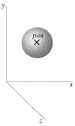

|
If you're new to Python A VPython tutorial Pictures of 3D objects What's new in VPython 6 VPython web site |
 This is documentation for Classic VPython (VPython 6), which continues to be available but is no longer supported. See vpython.org for information on installing VPython 7 or using GlowScript VPython. Documentation is available at glowscript.org by clicking Help. Here is an example of how to make a sphere: ball = sphere(pos=(1,2,1), radius=0.5) This produces a sphere centered at location (1,2,1) with radius = 0.5, with the current foreground color. The sphere object has the following attributes and default values, like those for cylinders except that there is no length attribute: pos (0,0,0), x (0), y(0), z(0), axis (1,0,0), color (1,1,1) which is color.white, red (1), green (1), blue (1), opacity (1), material, and up (0,1,0). As with cylinders, up and axis attributes affect the orientation of the sphere but have only a subtle effect on appearance unless a non-smooth material is specified. The magnitude of the axis attribute is irrelevant. Additional sphere attributes: radius Radius of the sphere, default = 1 Note that the pos attribute for cylinder, arrow, cone, and pyramid corresponds to one end of the object, whereas for a sphere it corresponds to the center of the object. If you include make_trail=True when you create the object, a trail will be left behind the object as you move it. For related options, see Leaving a Trail. See description of Additional Attributes available for all 3D display objects. |
||||